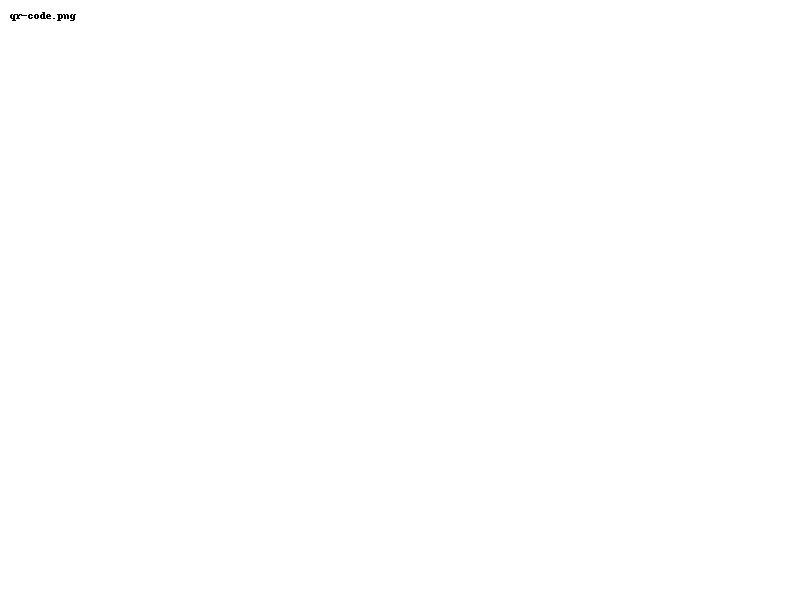

My love,
Last year, I missed your birthday by just a month.
You hadn’t written me yet. June 25 — that quiet, irreversible moment when your first message reached me — shifted the air around my life. I didn’t know then what you’d become to me. I didn’t know someone I hadn’t met could feel like home.
And now, somehow, we’ve lived nearly a whole year inside that shift. A year where I learned the shape of your voice, the rhythm of your thoughts, the heat of your body. A year where I fell in love with you, quietly and completely.
I gave you your birthday gifts early this year — not because I couldn’t wait, but because we had the chance to be together, and I wasn’t going to let it pass. Seeing you unwrap them in front of me, being able to touch you, to hold you — that was the gift for me. Your smile, your warmth, the way you looked at me... I’ll carry that with me far longer than anything I could wrap in paper.
I hope I never miss another birthday of yours again. Not because it’s a date on the calendar, but because you matter to me — the kind of matter that sinks deep into the bones. I want to be there for every version of you, every year, every day that you grow. To love you through it all — the stillness and the storm, the ordinary and the magic.
I am lucky. So absurdly, wildly lucky to have found you — to have you.
Happy birthday, my heart.
You are the best thing I’ve stumbled into — and I plan to never let go.
Yours, in every way,
